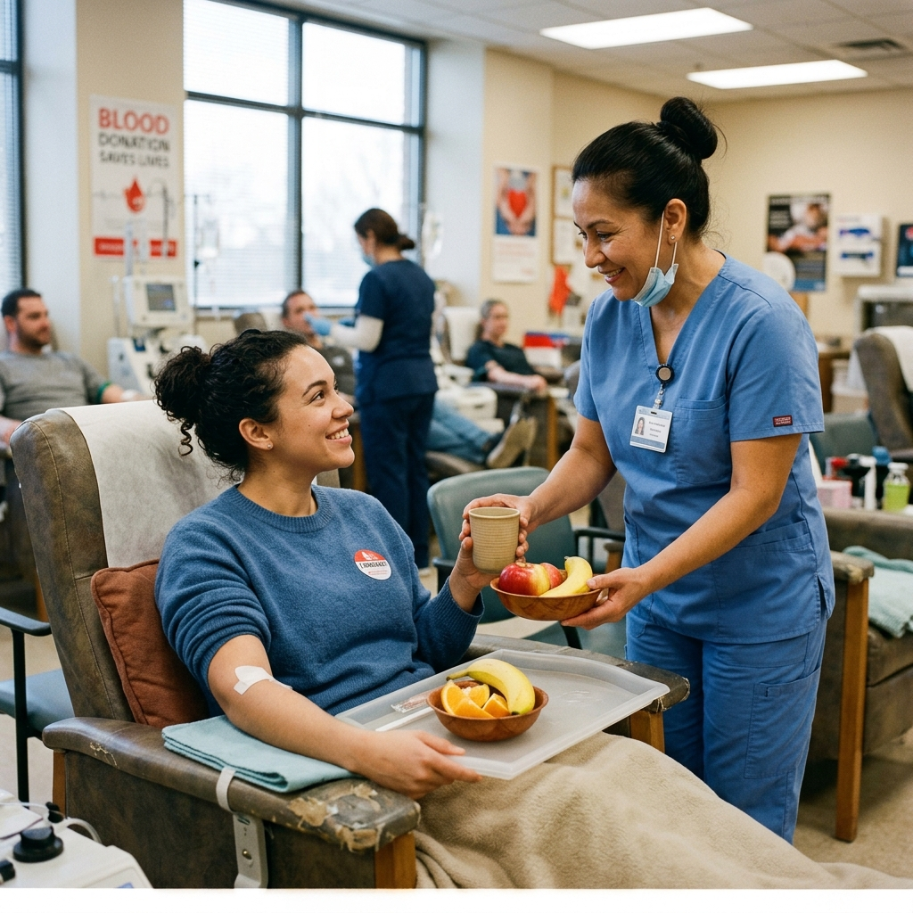

One registered donor can become someone's lifeline when every minute matters.
In an emergency ICU ward, a patient requires specific blood group units immediately.
🏥 XYZ Government Hospital, Worli • 📍 ~3.4 km away
Only government-certified healthcare organizations can broadcast emergency blood requirements.
The system matches blood group and proximity radius, delivering an instant alert to verified voluntary donors nearby.
Arun receives the alert, verifies his willingness, and responds with a single tap.

Arun arrives at the hospital donor center where healthcare professionals process the voluntary donation safely.
Be there when someone needs blood. Join thousands of voluntary donors across the community.
BECOME A DONOR TODAY